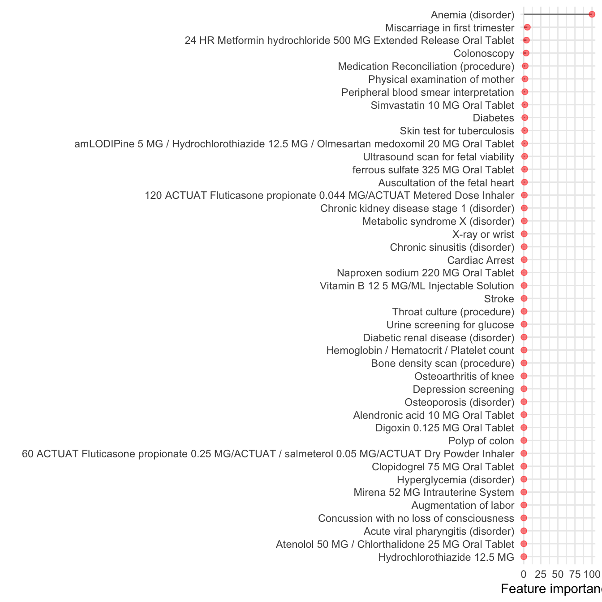
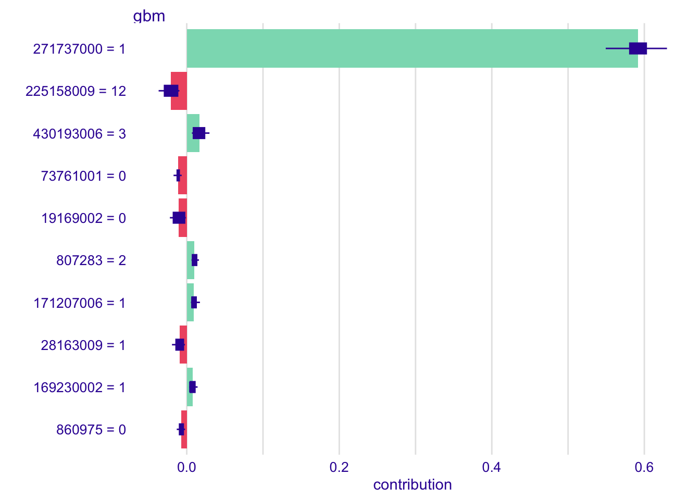
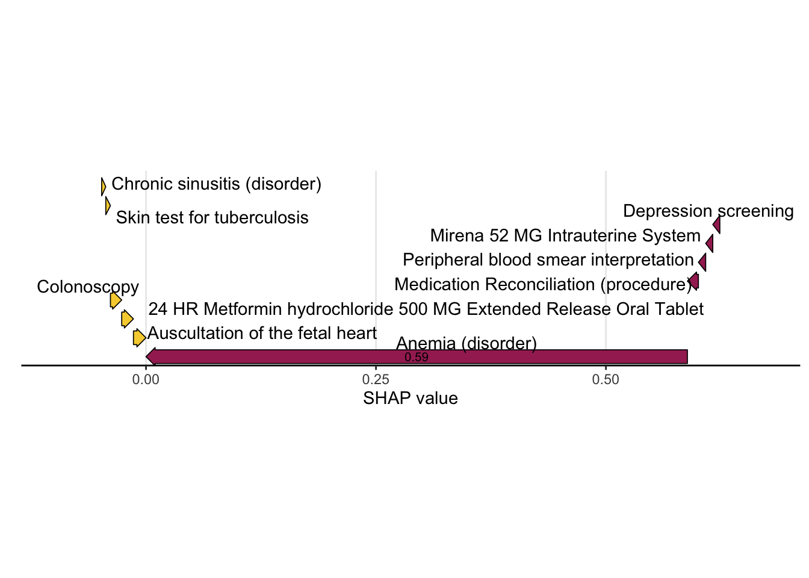
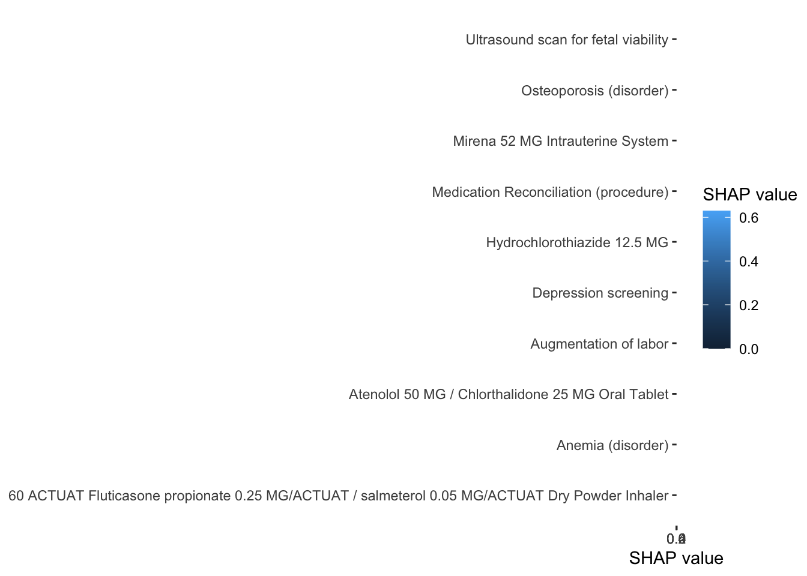

# make sure the package is installed --> devtools::install_github("hestiri/mlho")
library(mlho)MLHO Vanilla
Install and load the required packages:
if(!require(pacman)) install.packages("pacman")
#> Loading required package: pacman
pacman::p_load(data.table, devtools, backports, Hmisc, tidyr,dplyr,ggplot2,plyr,scales,readr,
httr, DT, lubridate, tidyverse,reshape2,foreach,doParallel,caret,gbm,lubridate,praznik, DALEX)MLHO Vanilla implementation
Here we go through the vanilla implementation of MLHO using the synthetic data provided in the package.
The synthetic data syntheticmass downloaded and prepared according to MLHO input data model from SyntheticMass, generated by SyntheaTM, an open-source patient population simulation made available by The MITRE Corporation.
data("syntheticmass")here’s how dbmart table looks (there’s an extra column that is the translation of the phenx concepts):
head(dbmart)
#> patient_num phenx
#> 1 8d4c4326-e9de-4f45-9a4c-f8c36bff89ae 169553002
#> 2 10339b10-3cd1-4ac3-ac13-ec26728cb592 430193006
#> 3 f5dcd418-09fe-4a2f-baa0-3da800bd8c3a 430193006
#> 4 f5dcd418-09fe-4a2f-baa0-3da800bd8c3a 117015009
#> 5 f5dcd418-09fe-4a2f-baa0-3da800bd8c3a 117015009
#> 6 f5dcd418-09fe-4a2f-baa0-3da800bd8c3a 430193006
#> DESCRIPTION start_date
#> 1 Insertion of subcutaneous contraceptive 2011-04-30 00:26:23
#> 2 Medication Reconciliation (procedure) 2010-07-27 12:58:08
#> 3 Medication Reconciliation (procedure) 2010-11-20 03:04:34
#> 4 Throat culture (procedure) 2011-02-07 03:04:34
#> 5 Throat culture (procedure) 2011-04-19 03:04:34
#> 6 Medication Reconciliation (procedure) 2011-11-26 03:04:34our demographic table contains: patient_num, white, black, hispanic, sex_cd.
##split data into train-test
uniqpats <- c(as.character(unique(dbmart$patient_num)))
#using a 70-30 ratio
test_ind <- sample(uniqpats,
round(.3*length(uniqpats)))
test_labels <- subset(labeldt,labeldt$patient_num %in% c(test_ind))
print("test set lables:")
#> [1] "test set lables:"
table(test_labels$label)
#>
#> 0 1
#> 261 90
train_labels <- subset(labeldt,!(labeldt$patient_num %in% c(test_ind)))
print("train set lables:")
#> [1] "train set lables:"
table(train_labels$label)
#>
#> 0 1
#> 593 227
# train and test sets
dat.train <- subset(dbmart,!(dbmart$patient_num %in% c(test_ind)))
dat.test <- subset(dbmart,dbmart$patient_num %in% c(test_ind))now dimensionality reduction on training set ## MSMR lite from here, we will split the data into a train and a test set and apply MSMR.lite to the training data
data.table::setDT(dat.train)
dat.train[,row := .I]
dat.train$value.var <- 1
uniqpats.train <- c(as.character(unique(dat.train$patient_num)))
##here is the application of MSMR.lite
dat.train <- MSMR.lite(MLHO.dat=dat.train,
patients = uniqpats.train,
sparsity=0.005,
labels = labeldt,
topn=200)
#> [1] "step - 1: sparsity screening!"
#> [1] "step 2: JMI dimensionality reduction!"Notice that we are removing concepts that had prevalence less than 0.5% and then only taking the top 200 after the JMI rankings. See help (?mlho::MSMR.lite) for MSMR.lite parameters.
Now we have the training data with the top 200 features, to which we can add demographic features. Now on to prepping the test set:
dat.test <- subset(dat.test,dat.test$phenx %in% colnames(dat.train))
setDT(dat.test)
dat.test[,row := .I]
dat.test$value.var <- 1
uniqpats.test <- c(as.character(unique(dat.test$patient_num)))
dat.test <- MSMR.lite(MLHO.dat=dat.test,patients = uniqpats.test,sparsity=NA,jmi = FALSE,labels = labeldt)Here notice that we only used MSMR.lite to generate the wide table that matches to the dat.train table.
##Modeling we will use the mlearn function to do the modeling, which includes training the model and testing it on the test set.
model.test <- mlearn(dat.train,
dat.test,
dems=dems,
save.model=FALSE,
classifier="gbm",
note="mlho_terst_run",
cv="cv",
nfold=5,
aoi="prediabetes",
multicore=FALSE,
calSHAP = TRUE,
n_incidence =200 ,
counterfactual = F,
save.model.counterfactual = F)
#> [1] "the modeling!"
#> Iter TrainDeviance ValidDeviance StepSize Improve
#> 1 1.0721 nan 0.1000 0.0528
#> 2 0.9872 nan 0.1000 0.0390
#> 3 0.9256 nan 0.1000 0.0316
#> 4 0.8717 nan 0.1000 0.0266
#> 5 0.8291 nan 0.1000 0.0205
#> 6 0.7951 nan 0.1000 0.0169
#> 7 0.7667 nan 0.1000 0.0140
#> 8 0.7457 nan 0.1000 0.0121
#> 9 0.7256 nan 0.1000 0.0100
#> 10 0.7085 nan 0.1000 0.0085
#> 20 0.6163 nan 0.1000 0.0024
#> 40 0.5363 nan 0.1000 0.0005
#> 60 0.4973 nan 0.1000 0.0003
#> 80 0.4702 nan 0.1000 -0.0000
#> 100 0.4476 nan 0.1000 -0.0013
#> 120 0.4262 nan 0.1000 -0.0008
#> 140 0.4135 nan 0.1000 -0.0011
#> 150 0.4063 nan 0.1000 -0.0004
#>
#> Iter TrainDeviance ValidDeviance StepSize Improve
#> 1 1.0582 nan 0.1000 0.0554
#> 2 0.9733 nan 0.1000 0.0430
#> 3 0.9079 nan 0.1000 0.0332
#> 4 0.8545 nan 0.1000 0.0272
#> 5 0.8045 nan 0.1000 0.0230
#> 6 0.7650 nan 0.1000 0.0183
#> 7 0.7382 nan 0.1000 0.0129
#> 8 0.7121 nan 0.1000 0.0124
#> 9 0.6852 nan 0.1000 0.0113
#> 10 0.6631 nan 0.1000 0.0099
#> 20 0.5478 nan 0.1000 0.0025
#> 40 0.4538 nan 0.1000 0.0009
#> 60 0.4097 nan 0.1000 -0.0009
#> 80 0.3759 nan 0.1000 -0.0003
#> 100 0.3531 nan 0.1000 -0.0010
#> 120 0.3317 nan 0.1000 -0.0000
#> 140 0.3187 nan 0.1000 -0.0002
#> 150 0.3119 nan 0.1000 -0.0018
#>
#> Iter TrainDeviance ValidDeviance StepSize Improve
#> 1 1.0704 nan 0.1000 0.0601
#> 2 0.9735 nan 0.1000 0.0469
#> 3 0.9016 nan 0.1000 0.0342
#> 4 0.8454 nan 0.1000 0.0297
#> 5 0.7962 nan 0.1000 0.0226
#> 6 0.7509 nan 0.1000 0.0196
#> 7 0.7127 nan 0.1000 0.0163
#> 8 0.6819 nan 0.1000 0.0150
#> 9 0.6553 nan 0.1000 0.0111
#> 10 0.6284 nan 0.1000 0.0106
#> 20 0.5026 nan 0.1000 0.0021
#> 40 0.4142 nan 0.1000 -0.0004
#> 60 0.3641 nan 0.1000 -0.0001
#> 80 0.3306 nan 0.1000 -0.0014
#> 100 0.3033 nan 0.1000 -0.0012
#> 120 0.2817 nan 0.1000 -0.0011
#> 140 0.2663 nan 0.1000 -0.0007
#> 150 0.2564 nan 0.1000 -0.0007
#>
#> Iter TrainDeviance ValidDeviance StepSize Improve
#> 1 1.0637 nan 0.1000 0.0571
#> 2 0.9826 nan 0.1000 0.0414
#> 3 0.9181 nan 0.1000 0.0333
#> 4 0.8659 nan 0.1000 0.0269
#> 5 0.8190 nan 0.1000 0.0227
#> 6 0.7827 nan 0.1000 0.0185
#> 7 0.7500 nan 0.1000 0.0149
#> 8 0.7284 nan 0.1000 0.0132
#> 9 0.7068 nan 0.1000 0.0106
#> 10 0.6884 nan 0.1000 0.0091
#> 20 0.6033 nan 0.1000 0.0000
#> 40 0.5314 nan 0.1000 -0.0006
#> 60 0.4912 nan 0.1000 0.0001
#> 80 0.4713 nan 0.1000 -0.0004
#> 100 0.4501 nan 0.1000 -0.0004
#> 120 0.4299 nan 0.1000 -0.0009
#> 140 0.4169 nan 0.1000 0.0004
#> 150 0.4097 nan 0.1000 -0.0005
#>
#> Iter TrainDeviance ValidDeviance StepSize Improve
#> 1 1.0663 nan 0.1000 0.0589
#> 2 0.9718 nan 0.1000 0.0438
#> 3 0.8973 nan 0.1000 0.0342
#> 4 0.8388 nan 0.1000 0.0288
#> 5 0.7906 nan 0.1000 0.0229
#> 6 0.7500 nan 0.1000 0.0187
#> 7 0.7174 nan 0.1000 0.0166
#> 8 0.6879 nan 0.1000 0.0130
#> 9 0.6642 nan 0.1000 0.0093
#> 10 0.6449 nan 0.1000 0.0089
#> 20 0.5255 nan 0.1000 0.0016
#> 40 0.4490 nan 0.1000 0.0005
#> 60 0.4075 nan 0.1000 -0.0018
#> 80 0.3806 nan 0.1000 -0.0011
#> 100 0.3605 nan 0.1000 -0.0012
#> 120 0.3400 nan 0.1000 0.0001
#> 140 0.3246 nan 0.1000 -0.0010
#> 150 0.3184 nan 0.1000 -0.0006
#>
#> Iter TrainDeviance ValidDeviance StepSize Improve
#> 1 1.0537 nan 0.1000 0.0615
#> 2 0.9639 nan 0.1000 0.0448
#> 3 0.8878 nan 0.1000 0.0345
#> 4 0.8277 nan 0.1000 0.0284
#> 5 0.7796 nan 0.1000 0.0246
#> 6 0.7364 nan 0.1000 0.0175
#> 7 0.6977 nan 0.1000 0.0160
#> 8 0.6659 nan 0.1000 0.0138
#> 9 0.6410 nan 0.1000 0.0107
#> 10 0.6206 nan 0.1000 0.0094
#> 20 0.4927 nan 0.1000 0.0022
#> 40 0.4062 nan 0.1000 -0.0003
#> 60 0.3625 nan 0.1000 -0.0016
#> 80 0.3334 nan 0.1000 -0.0011
#> 100 0.3095 nan 0.1000 -0.0007
#> 120 0.2877 nan 0.1000 -0.0015
#> 140 0.2717 nan 0.1000 -0.0011
#> 150 0.2644 nan 0.1000 -0.0010
#>
#> Iter TrainDeviance ValidDeviance StepSize Improve
#> 1 1.0661 nan 0.1000 0.0587
#> 2 0.9818 nan 0.1000 0.0440
#> 3 0.9120 nan 0.1000 0.0333
#> 4 0.8590 nan 0.1000 0.0283
#> 5 0.8127 nan 0.1000 0.0226
#> 6 0.7692 nan 0.1000 0.0181
#> 7 0.7391 nan 0.1000 0.0159
#> 8 0.7148 nan 0.1000 0.0132
#> 9 0.6930 nan 0.1000 0.0115
#> 10 0.6754 nan 0.1000 0.0097
#> 20 0.5846 nan 0.1000 0.0010
#> 40 0.5066 nan 0.1000 0.0012
#> 60 0.4652 nan 0.1000 -0.0002
#> 80 0.4353 nan 0.1000 0.0002
#> 100 0.4179 nan 0.1000 0.0002
#> 120 0.4029 nan 0.1000 -0.0003
#> 140 0.3900 nan 0.1000 -0.0020
#> 150 0.3821 nan 0.1000 -0.0005
#>
#> Iter TrainDeviance ValidDeviance StepSize Improve
#> 1 1.0657 nan 0.1000 0.0618
#> 2 0.9775 nan 0.1000 0.0436
#> 3 0.9004 nan 0.1000 0.0362
#> 4 0.8380 nan 0.1000 0.0272
#> 5 0.7841 nan 0.1000 0.0232
#> 6 0.7429 nan 0.1000 0.0193
#> 7 0.7055 nan 0.1000 0.0175
#> 8 0.6779 nan 0.1000 0.0139
#> 9 0.6548 nan 0.1000 0.0111
#> 10 0.6321 nan 0.1000 0.0103
#> 20 0.5101 nan 0.1000 0.0031
#> 40 0.4295 nan 0.1000 -0.0018
#> 60 0.3870 nan 0.1000 -0.0016
#> 80 0.3540 nan 0.1000 -0.0010
#> 100 0.3345 nan 0.1000 -0.0014
#> 120 0.3137 nan 0.1000 -0.0008
#> 140 0.2966 nan 0.1000 -0.0008
#> 150 0.2925 nan 0.1000 -0.0017
#>
#> Iter TrainDeviance ValidDeviance StepSize Improve
#> 1 1.0526 nan 0.1000 0.0627
#> 2 0.9570 nan 0.1000 0.0461
#> 3 0.8797 nan 0.1000 0.0358
#> 4 0.8154 nan 0.1000 0.0290
#> 5 0.7688 nan 0.1000 0.0229
#> 6 0.7236 nan 0.1000 0.0203
#> 7 0.6853 nan 0.1000 0.0170
#> 8 0.6547 nan 0.1000 0.0141
#> 9 0.6281 nan 0.1000 0.0108
#> 10 0.6053 nan 0.1000 0.0112
#> 20 0.4739 nan 0.1000 0.0025
#> 40 0.3877 nan 0.1000 -0.0010
#> 60 0.3384 nan 0.1000 -0.0009
#> 80 0.3018 nan 0.1000 -0.0034
#> 100 0.2739 nan 0.1000 -0.0016
#> 120 0.2545 nan 0.1000 -0.0006
#> 140 0.2372 nan 0.1000 -0.0018
#> 150 0.2302 nan 0.1000 -0.0011
#>
#> Iter TrainDeviance ValidDeviance StepSize Improve
#> 1 1.0700 nan 0.1000 0.0551
#> 2 0.9756 nan 0.1000 0.0452
#> 3 0.9095 nan 0.1000 0.0353
#> 4 0.8497 nan 0.1000 0.0264
#> 5 0.8068 nan 0.1000 0.0220
#> 6 0.7691 nan 0.1000 0.0191
#> 7 0.7380 nan 0.1000 0.0159
#> 8 0.7091 nan 0.1000 0.0134
#> 9 0.6861 nan 0.1000 0.0107
#> 10 0.6662 nan 0.1000 0.0090
#> 20 0.5802 nan 0.1000 0.0028
#> 40 0.5065 nan 0.1000 -0.0014
#> 60 0.4675 nan 0.1000 -0.0002
#> 80 0.4420 nan 0.1000 -0.0013
#> 100 0.4206 nan 0.1000 -0.0009
#> 120 0.4011 nan 0.1000 0.0000
#> 140 0.3862 nan 0.1000 -0.0003
#> 150 0.3812 nan 0.1000 -0.0005
#>
#> Iter TrainDeviance ValidDeviance StepSize Improve
#> 1 1.0538 nan 0.1000 0.0572
#> 2 0.9610 nan 0.1000 0.0461
#> 3 0.8893 nan 0.1000 0.0353
#> 4 0.8345 nan 0.1000 0.0286
#> 5 0.7801 nan 0.1000 0.0264
#> 6 0.7425 nan 0.1000 0.0198
#> 7 0.7053 nan 0.1000 0.0184
#> 8 0.6706 nan 0.1000 0.0153
#> 9 0.6487 nan 0.1000 0.0112
#> 10 0.6257 nan 0.1000 0.0108
#> 20 0.5125 nan 0.1000 0.0006
#> 40 0.4355 nan 0.1000 -0.0024
#> 60 0.3941 nan 0.1000 -0.0019
#> 80 0.3611 nan 0.1000 -0.0014
#> 100 0.3349 nan 0.1000 -0.0016
#> 120 0.3154 nan 0.1000 -0.0013
#> 140 0.3011 nan 0.1000 -0.0014
#> 150 0.2949 nan 0.1000 -0.0016
#>
#> Iter TrainDeviance ValidDeviance StepSize Improve
#> 1 1.0573 nan 0.1000 0.0621
#> 2 0.9624 nan 0.1000 0.0463
#> 3 0.8811 nan 0.1000 0.0383
#> 4 0.8171 nan 0.1000 0.0292
#> 5 0.7685 nan 0.1000 0.0231
#> 6 0.7211 nan 0.1000 0.0225
#> 7 0.6805 nan 0.1000 0.0178
#> 8 0.6491 nan 0.1000 0.0132
#> 9 0.6232 nan 0.1000 0.0113
#> 10 0.5994 nan 0.1000 0.0100
#> 20 0.4711 nan 0.1000 0.0016
#> 40 0.3923 nan 0.1000 -0.0015
#> 60 0.3461 nan 0.1000 -0.0017
#> 80 0.3091 nan 0.1000 -0.0003
#> 100 0.2820 nan 0.1000 -0.0018
#> 120 0.2634 nan 0.1000 -0.0008
#> 140 0.2478 nan 0.1000 -0.0016
#> 150 0.2379 nan 0.1000 -0.0016
#>
#> Iter TrainDeviance ValidDeviance StepSize Improve
#> 1 1.0619 nan 0.1000 0.0582
#> 2 0.9711 nan 0.1000 0.0456
#> 3 0.8971 nan 0.1000 0.0364
#> 4 0.8401 nan 0.1000 0.0275
#> 5 0.7954 nan 0.1000 0.0231
#> 6 0.7565 nan 0.1000 0.0182
#> 7 0.7253 nan 0.1000 0.0158
#> 8 0.7033 nan 0.1000 0.0126
#> 9 0.6768 nan 0.1000 0.0104
#> 10 0.6579 nan 0.1000 0.0091
#> 20 0.5657 nan 0.1000 0.0012
#> 40 0.4950 nan 0.1000 0.0005
#> 60 0.4596 nan 0.1000 -0.0005
#> 80 0.4294 nan 0.1000 0.0001
#> 100 0.4054 nan 0.1000 0.0001
#> 120 0.3888 nan 0.1000 -0.0009
#> 140 0.3740 nan 0.1000 -0.0002
#> 150 0.3658 nan 0.1000 0.0001
#>
#> Iter TrainDeviance ValidDeviance StepSize Improve
#> 1 1.0620 nan 0.1000 0.0646
#> 2 0.9669 nan 0.1000 0.0490
#> 3 0.8863 nan 0.1000 0.0368
#> 4 0.8233 nan 0.1000 0.0290
#> 5 0.7734 nan 0.1000 0.0228
#> 6 0.7339 nan 0.1000 0.0191
#> 7 0.6984 nan 0.1000 0.0174
#> 8 0.6695 nan 0.1000 0.0145
#> 9 0.6451 nan 0.1000 0.0116
#> 10 0.6222 nan 0.1000 0.0110
#> 20 0.5025 nan 0.1000 0.0018
#> 40 0.4242 nan 0.1000 -0.0015
#> 60 0.3766 nan 0.1000 -0.0007
#> 80 0.3408 nan 0.1000 -0.0019
#> 100 0.3161 nan 0.1000 -0.0005
#> 120 0.2965 nan 0.1000 -0.0015
#> 140 0.2808 nan 0.1000 -0.0009
#> 150 0.2745 nan 0.1000 -0.0008
#>
#> Iter TrainDeviance ValidDeviance StepSize Improve
#> 1 1.0535 nan 0.1000 0.0649
#> 2 0.9562 nan 0.1000 0.0474
#> 3 0.8786 nan 0.1000 0.0371
#> 4 0.8181 nan 0.1000 0.0291
#> 5 0.7646 nan 0.1000 0.0239
#> 6 0.7176 nan 0.1000 0.0214
#> 7 0.6807 nan 0.1000 0.0160
#> 8 0.6481 nan 0.1000 0.0136
#> 9 0.6180 nan 0.1000 0.0126
#> 10 0.5950 nan 0.1000 0.0095
#> 20 0.4681 nan 0.1000 0.0015
#> 40 0.3774 nan 0.1000 0.0001
#> 60 0.3296 nan 0.1000 -0.0014
#> 80 0.2937 nan 0.1000 -0.0009
#> 100 0.2704 nan 0.1000 -0.0028
#> 120 0.2483 nan 0.1000 -0.0009
#> 140 0.2311 nan 0.1000 -0.0002
#> 150 0.2233 nan 0.1000 -0.0016
#>
#> Iter TrainDeviance ValidDeviance StepSize Improve
#> 1 1.0565 nan 0.1000 0.0553
#> 2 0.9672 nan 0.1000 0.0465
#> 3 0.8913 nan 0.1000 0.0368
#> 4 0.8304 nan 0.1000 0.0276
#> 5 0.7795 nan 0.1000 0.0242
#> 6 0.7363 nan 0.1000 0.0211
#> 7 0.6973 nan 0.1000 0.0171
#> 8 0.6692 nan 0.1000 0.0123
#> 9 0.6408 nan 0.1000 0.0126
#> 10 0.6183 nan 0.1000 0.0101
#> 20 0.4880 nan 0.1000 0.0035
#> 40 0.4019 nan 0.1000 -0.0001
#> 50 0.3766 nan 0.1000 -0.0005
#> Loading required package: pROC
#> Type 'citation("pROC")' for a citation.
#>
#> Attaching package: 'pROC'
#> The following objects are masked from 'package:stats':
#>
#> cov, smooth, var
#> Loading required package: PRROC
#> Loading required package: rlang
#>
#> Attaching package: 'rlang'
#> The following objects are masked from 'package:purrr':
#>
#> %@%, flatten, flatten_chr, flatten_dbl, flatten_int, flatten_lgl,
#> flatten_raw, invoke, splice
#> The following object is masked from 'package:backports':
#>
#> %||%
#> The following object is masked from 'package:data.table':
#>
#> :=
#> Loading required package: ModelMetrics
#>
#> Attaching package: 'ModelMetrics'
#> The following object is masked from 'package:pROC':
#>
#> auc
#> The following objects are masked from 'package:caret':
#>
#> confusionMatrix, precision, recall, sensitivity, specificity
#> The following object is masked from 'package:base':
#>
#> kappa
#> Setting levels: control = N, case = Y
#> Setting direction: controls < cases
#> Preparation of a new explainer is initiated
#> -> model label : gbm
#> -> data : 819 rows 205 cols
#> -> target variable : 0 values
#> -> target variable : length of 'y' is different than number of rows in 'data' ( WARNING )
#> -> predict function : yhat.train will be used ( default )
#> -> predicted values : No value for predict function target column. ( default )
#> -> model_info : package caret , ver. 7.0.1 , task classification ( default )
#> -> predicted values : numerical, min = 0.01284239 , mean = 0.2730344 , max = 0.9780172
#> -> residual function : difference between y and yhat ( default )
#> -> residuals : numerical, min = Inf , mean = NaN , max = -Inf
#> A new explainer has been created!try ?mlho::mlearn to learn more about mlearn parameters.
you can select a variety of models. For binray classification tasks, chose from:ORFlog, RRF,gbm,bayesglm,regLogistic,xgbDART,regLogistic, glmnet, bayesglm, nb, svmRadialWeights,avNNet,and ordinalRF. see the list and description of all available models
mlearn outputs
outputs of mlearn include:
- model performance metrics:
model.test$ROC- in model.test AUROC is 0.9430716
- final important features, which can be pulled and save from
model.test$features - absolute errors for each patients using
model.test$AE - missing important features
model.test$missing.features - SHAP values
model.test$shap
For instance, only the following 44 features were used in phenotyping the prediabetes:
features = model.test$features
head(features)
#> Overall features classifier aoi
#> 3 0.4752894 117015009 gbm prediabetes
#> 4 0.1306988 195662009 gbm prediabetes
#> 5 2.1589882 430193006 gbm prediabetes
#> 9 3.4741224 73761001 gbm prediabetes
#> 16 0.2178041 197604 gbm prediabetes
#> 17 1.6628767 314231 gbm prediabeteswe recommend iterating the training and testing and storing the coefficients in a directory.
Visualizing the outputs
Here we create a plot of the feature importance scores for each of the top (here we have ) predictors identified by MLHO.
To do so, let’s map the concept codes to their “English” translation. That’s why we kept that 4th column called description in dbmart.
dbmart.concepts <- dbmart[!duplicated(paste0(dbmart$phenx)), c("phenx","DESCRIPTION")]
mlho.features <- data.frame(merge(model.test$features,dbmart.concepts,by.x="features",by.y = "phenx"))
datatable(dplyr::select(mlho.features,features,DESCRIPTION,`Feature importance`=Overall), options = list(pageLength = 5), filter = 'bottom')now visualizing feature importance
(plot<- ggplot(mlho.features) +
geom_segment(
aes(y = 0,
x = reorder(DESCRIPTION,Overall),
yend = Overall,
xend = DESCRIPTION),
size=0.5,alpha=0.5) +
geom_point(
aes(x=reorder(DESCRIPTION,Overall),y=Overall),
alpha=0.5,size=2,color="red") +
theme_minimal()+
coord_flip()+
labs(y="Feature importance",x=""))
#> Warning: Using `size` aesthetic for lines was deprecated in ggplot2 3.4.0.
#> ℹ Please use `linewidth` instead.
SHAP value and visualization
When setting calSHAP=TRUE, SHAP values are also calculated to explain the output of models as shown below.
shap_value <- model.test$shap
head(as.data.frame(shap_value))
#> variable contribution variable_name variable_value sign label B
#> 1000126 1000126 = 0 0.000000000 1000126 0 0 gbm 0
#> 10383002 10383002 = 0 0.000000000 10383002 0 0 gbm 0
#> 104091002 104091002 = 2 -0.001458275 104091002 2 -1 gbm 0
#> 104326007 104326007 = 1 0.000000000 104326007 1 0 gbm 0
#> 104375008 104375008 = 1 0.000000000 104375008 1 0 gbm 0
#> 104435004 104435004 = 0 0.000000000 104435004 0 0 gbm 0Using the default plot function, the feature importance are shown below.
plot(shap_value)
mshapviz(shap_value, dbmart.concepts, plot_type = "waterfall", top_n = 5, num = 6)
#> Selecting by abs_S
#> Selecting by abs_S
mshapviz_all(shap_value, dbmart.concepts, top_n = 5)
#> Selecting by mean_S
#> Selecting by mean_S
Notes for more complex implementation
As we recommended above, it’s best to at least iterate the training process 5 times, in which case you’ll have 5 files containing the important features from MLHO. We do this regularly. If you do so, you can compute the mean/median values for each feature.
Now if you want to get the regression coefficients and compute Odds Ratios (ORs), you can then select the top feature that were selected most frequently in MLHO iterations to run a regression model (pass glm to mlearn) and extract regression coefficients to then transform to ORs.